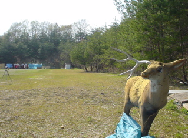

2005年04月20日
モミモミ
今日もマッサージへ。
おとといのもみ残し（？）をほぐしてもらう。勢い余って回数券を購入。
定期的にほぐしてもらい最高のパフォーマンスを発揮できるよう調整してもらいたい。

マッサージとは絶対に関係ない東響電機大学鳩山キャンパスの鹿
投稿者 yusuke : 21:59 | コメント (0) | トラックバック
2005年04月18日
モミモミ
今日は板橋が休館日なのでマッサージへ。
担当してもらっていたひとがやめてしまっていて残念。
でも今日やってもらった人はえらい怪力でしっかりほぐしてもらえ、満足。
もみ返しが来るかも、とのこと。もみ返しになったことないので逆に期待しちゃう。
ちなみにマッサージをする人は「あん摩マッサージ指圧師」という国家資格を持っているらしい。頭をとって通称「アマシ」だそうだ。
投稿者 yusuke : 23:38 | コメント (0) | トラックバック
2005年04月07日
トレーニング
今日は帰りが遅かったので腕立て伏せと腹筋を、明日軽く筋肉痛になりそうな程度。
矢を入手したので明日は名入れ、羽根付けをする予定。土曜日は練習しまくろう。
投稿者 yusuke : 01:56 | コメント (2) | トラックバック
2005年03月22日
トレーニング
今日は素引き。３０回くらいだけ。
投稿者 yusuke : 23:52 | コメント (0) | トラックバック
2005年03月08日
運動
今日は長めに40分走った。距離は4.2マイル。ランはだいぶ調子づいてきた感じ。
筋トレは腕立て、腹筋１５回２セットと素引き３０回くらい。
投稿者 yusuke : 21:58 | コメント (0) | トラックバック
2005年03月01日
トレーニング日誌
今日は腕立て伏せ/腹筋のみ。やや腰が痛い。
しっかりストレッチしないと・・・。
投稿者 yusuke : 22:24 | コメント (2) | トラックバック
2005年02月25日
フィットネス
今日は3.4マイルを34分かけてラン。
だいぶ楽になってきたけれどもちょっと気がゆるむと無意識に手が動いてスピードを落としてしまいそうになる。息はそんなにあがっていないんだけども・・・いかんいかん。
ランのあとは腕立て伏せ、腹筋、ハム２ラウンド。
投稿者 yusuke : 22:09 | コメント (0) | トラックバック
2005年02月14日
ラン
今日は３．１マイル＆腹筋３０回x2。
ようやく体力がついてきたのか３０分のランが短く感じられるようになってきた。
基本時速６マイル、たまに8マイルくらいで走っているけれども心拍数もそれほど上がらなくなってきた感じ。
スピードを上げるか、傾斜をつけて負荷を高めた方がよいかな。
今行っているフィットネスクラブは２ヶ月の臨時会員で170ドル。日本でフィットネスクラブの会員になったことはないけど、そんな変わらないかな？帰ったら近所のに入会しよう。
投稿者 yusuke : 21:51 | コメント (0) | トラックバック
2005年02月10日
ラン
今日も３マイル走った。
日本でフィットネスクラブにいくとそこそこ健康そうな男女ががんばっているけどもアメリカではなんだかすごい。
血色の悪いひとはさすがにいないけれどもとにかく「手遅れ？」と思うくらい恰幅の良い方々もがんばっている。
さすがにあの体格でトレッドミルに乗るのは膝に悪いんじゃないかと思うけども・・・・。
食べることに関心が高い分カロリーを消費することにも大変関心が高いみたい。
投稿者 yusuke : 19:29 | コメント (0) | トラックバック
2005年02月08日
ラン
全然目標通りにトレーニングできてないけどとりあえず３マイル。
投稿者 yusuke : 19:42 | コメント (0) | トラックバック
2005年01月29日
ラン
とりあえず３マイル。
まだまだ調子でないね。しっかり睡眠、しっかり運動でメリハリをつけたい。
投稿者 yusuke : 21:21 | コメント (0) | トラックバック
2005年01月28日
ラン♪
最近家に帰るとくたびれててトレーニングサボり気味。いかんね。
ジムで2.8マイル。腹筋少々。
投稿者 yusuke : 21:21 | コメント (0) | トラックバック
2005年01月11日
トレーニング日誌
ラン3マイル。ちとくたびれて筋トレはなし:p
案の定イメージトレーニングがおろそかになってる。習慣づけないと。
投稿者 yusuke : 13:48 | コメント (0) | トラックバック
2005年01月08日
今日の運動
ラン2.8マイル。腕立て伏せ20x2、腹筋20x2
もすこし負荷ふやすかな？
投稿者 yusuke : 15:02 | コメント (1) | トラックバック
2005年01月06日
トレーニング日誌
今日もマンションのスポーツセンターでラン 30分間。2.8マイル。
自室で腕立て伏せ20x2、腹筋20x2。
投稿者 yusuke : 15:20 | コメント (1) | トラックバック
2005年01月04日
トレーニング日誌
当たり前だけどトレッドミルの距離はマイル表示だった。
今日はマンションにあるスポーツセンター（といっても結構シンプルなとこ）でラン 30分間。2.6マイル。
自室で腕立て伏せ20x2、腹筋20x2。
最近サボリ気味だったのでまずは軽く。
ウェイトトレーニングができないのでやっぱジムに入会したい。
投稿者 yusuke : 16:28 | コメント (2) | トラックバック
2004年09月05日
サプリ・サプリ・サプリ
学生のときからやっているアーチェリー。
最近大学のコーチをやることになり、自分でも力を入れている。
学生のときみたいに毎日朝から晩まで練習するわけにはいかないので効率よく最大のパフォーマンスを発揮するため、金で解決できることには金を使うことに。社会人ならでは。
で、スポーツをやるにあたり金を使うことといえばまずはサプリメント？
スポーツ関連の専門学校を出ている友人のすすめでサプリメントとしてはアミノ酸、Musashi が良いとのこと。
Musashi はオーストラリア製のアミノ酸サプリメントで、筋力向上、疲労回復など目的別に製品がわかれているのが特徴。
多くのアスリートに支持されているらしいけどとにかく高いのが難点・・・。
海外の通販サイトをちょっと探したけど海外に出荷しているところが見つからなかった。
国内でさがしたところ、ざっと安いところとして CNI というのが見つかった。個人輸入代行をやっているところで筋力向上の Kuan というのが 300g で通常1万円以上するところ8000円。
トレーニング後のリカバリーを助ける Ni とのセットで16900円というのを注文していた。
ホームページのつくりがなんだか寂しい雰囲気で心配だったけども注文したら速攻対応してくれた。振込み当日に発送をしてくれて大満足。
投稿者 yusuke : 22:43 | コメント (1) | トラックバック
2004年04月21日
昼フトバグ練
今日も昼はフットバッグ練習。
いつも１時間練習してるのだが、今日はなんだかバテやすく４０分くらいで切り上げた。
まだクリッパーストール(足を交差させて後ろ足のインサイドでバッグを受ける)はできない。
投稿者 yusuke : 21:48 | コメント (0) | トラックバック
2004年04月20日
昼フトバグ錬
今日もお昼はフットバッグ錬。
ちなみに説明しておくとフットバッグは砂やプラスチックの粒がはいったお手玉みたいな玉を足で操るスポーツ。
見た目以上にめちゃめちゃむずかしく、運動量があり楽しい。ペプシのおまけについてきたのがきっかけで始めたのだが会社で大流行(?)。
-ペプシフットバッグホーム
http://www.pepsi.co.jp/navi_html/h_footbag.html
-Footbag WorldWide Information Service
http://www.footbag.org/
今日はクリッパーって技を練習してた。全然できない。あと筋トレも。
投稿者 yusuke : 23:43 | コメント (0) | トラックバック
2004年04月19日
運動日誌をつけよう
どんな運動したか記録をつけることにした。
朝はランニング30分、ゆっくりめで4.5Km。腰痛めてしばらく走ってなかったのでちと苦痛。筋トレはなし。
昼はフットバッグの練習。
夜はスイミングレッスンの予定だが残念ながら今日は仕事の都合上行けなさそう。